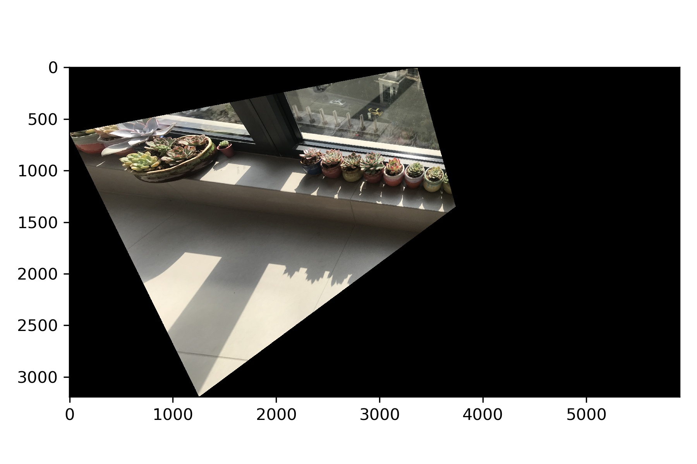
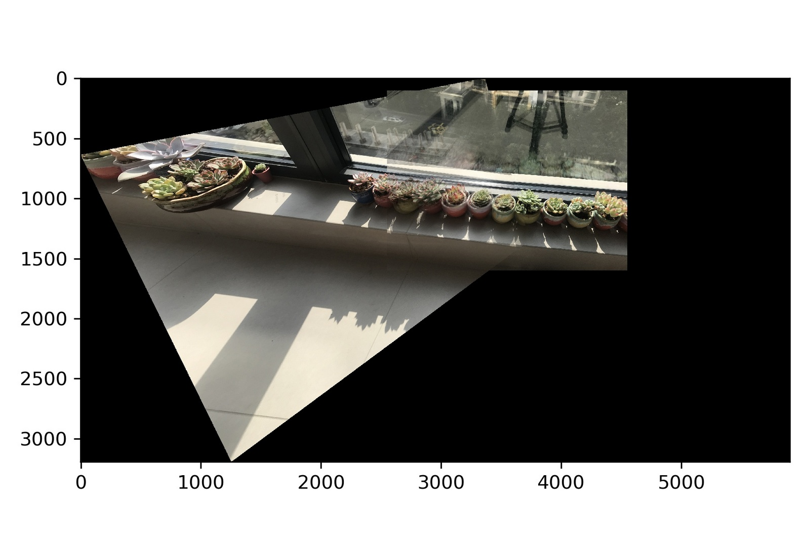

The images I used are taken from the balcony at my home. The camera focus length is fixed when images are taken, and the two images are taken at a fixed position with a tripod.
From lecture, we know image projection from a fixed center of projection can be simulated by 2D image warping. The transformation is called homography, and it preserves straight lines but not parallelism (rectangle will be mapped to arvitray quadrilateral).
To find the matrix for homography transformation, we select at least 4 pairs of corresponding points and do Least-Square Regression to reduce distortion.
By transforming original coordinates on left image to corresponding new coordinates in the plane of right image, we can warp the left image to a new image in plane of right image.
To test I have the correct function to find optimal transformation matrix for given corresponding coordinates, I try to rectify some images to front viewpoint. Below is an example by setting 4 corners of the book and 4 corners of the ipad to transform to 4 corners of a rectangle in front view respectively. The result image will be in top view.
Here is another example.
To create the final mosaic, we blend the warpped left image (which already aligns with coordinates of right image) and right image together. The result is as below. We can see that the warping is not perfectly aligned and overlapped part is blured, maybe because the position of the camera is not perfectly fixed and we cannot project both images to a single plane.
The second example has images taken outside the window. Because the buildings are far away from the camera, we can regard them as on one planar surface. In this case, we can even use images which are not taken at a fixed camera center. The manually selected points and warping and blending results are as below.
In this example, I capture a tables surface which I expect to be a flat surface.
created with
Website Builder Software .